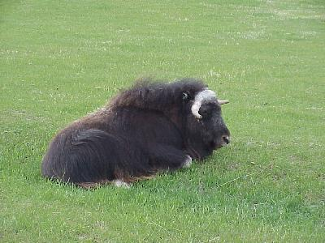
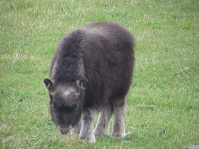
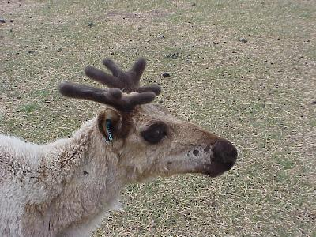
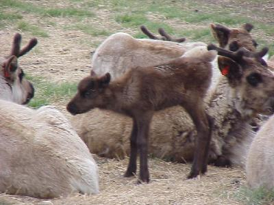

May 29, 4974 miles
| We started the day leaving camp at 9:00. We stayed at the Homestead RV Park in Palmer, one of the best camp ground facilities we have seen on our trip. | |
| Not a lot of travel today, we only had a few miles to go to get to Anchorage; so we visited a few of the "tourist" sites. The first was the Musk Ox farm a few miles east of Palmer. |  |
| The farm appears to be well run, and they put on a
very educational show with regards to the Musk Ox's past
and future. Part of that future is their breeding program
that helps ensure the long term viability of the Musk Ox. Here is one of the baby musk ox. |
 |
| We also toured a reindeer farm, again near Palmer. The educational program was nothing near the program at the Musk Ox farm, but the animals were interesting to see none the less. |  |
| The reindeer also have just had their babies. The moms are a little protective, so we could not get too close to the little ones. |  |
| Little travel today (133 miles), but a
lot of sight seeing. In addition to the farms above we
stopped by a wolf kennel, which was not nearly as well
done as either farm, and drove up to the Independance
Mine State Historical Park, which is still closed for the
season. Wildlife for the day included: moose (1); hoary marmots (kind of like a ground hog) (2). We are joined by another today. Merry Lou (Donald's wife, Dean's Mom) flies in at 11:30PM (Alaska time, 3:30AM her time), so we checked in to the hotel early (3:00); giving us time to clean out the van a little - so Merry Lou does not get too excited. We also had the oil changed, and a few of those other housekeeping chores. |
|